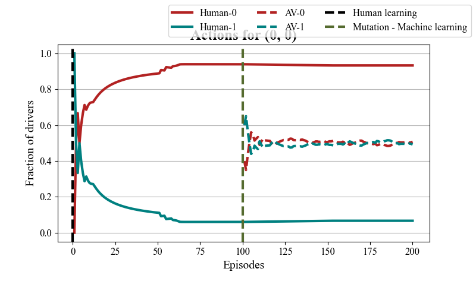

RouteRL Quickstart¶
We simulate a simple network topology where humans and later AVs make routing decisions to maximize their rewards (i.e., minimize travel times) over a sequence of days.
For the first 100 days, we model a human-driven system, where drivers update their routing policies using behavioral models to optimize rewards.
Each day, we simulate the impact of joint actions using the
SUMOtraffic simulator, which returns the reward for each agent.After 100 days, we introduce 10
Autononmous Vehicles(AVs) asPetting Zooagents, allowing them to use anyMARLalgorithm to maximise rewards. In this tutorial, we use a trained policy from the Independent Deep Q-Learning (IDQN) algorithm.Finally, we analyse basic results from the simulation.
Establishing the Connection with SUMO
Initializing the Traffic Environment
Define the
TrafficEnvironment, which initializes human agents and generates the routes agents will travel within the network.
Training Human Agents
Train human-driven vehicles to navigate the environment efficiently using human behavioural models from transportation research.
Introducing Autonomous Vehicles (AVs)
Transform a subset of human agents into AVs.
AVs select their routes using a pre-trained policy based on the IDQN algorithm.
Analyzing the Impact of AVs
Evaluate the effects of AV introduction on human travel time, congestion, and CO₂ emissions.
Demonstrate how AV deployment can potentially increase travel delays and environmental impact.
In this repository we don’t recommend adjusting the number of agents, because the policy is trained for 10 AV agents.


Import libraries¶
import sys
import os
import pandas as pd
import torch
from torchrl.envs.libs.pettingzoo import PettingZooWrapper
sys.path.append(os.path.abspath(os.path.join(os.getcwd(), '../../')))
from routerl import TrafficEnvironment
Define hyperparameters¶
Users can customize parameters for the
TrafficEnvironmentclass by consulting therouterl/environment/params.jsonfile. Based on its contents, they can create a dictionary with their preferred settings and pass it as an argument to theTrafficEnvironmentclass.
human_learning_episodes = 100
env_params = {
"agent_parameters" : {
"num_agents" : 100,
"new_machines_after_mutation": 10, # the number of human agents that will mutate to AVs
"human_parameters" : {
"model" : "gawron"
},
"machine_parameters" :
{
"behavior" : "selfish",
}
},
"simulator_parameters" : {
"network_name" : "two_route_yield"
},
"plotter_parameters" : {
"phases" : [0, human_learning_episodes], # the number of episodes human learning will take
},
}
Environment initialization¶
In our setup, road networks initially consist of human agents, with AVs introduced later.
The
TrafficEnvironmentenvironment is firstly initialized.The traffic network is instantiated and the paths between designated origin and destination points are determined.
The drivers/agents objects are created.
env = TrafficEnvironment(seed=42, **env_params)
[CONFIRMED] Environment variable exists: SUMO_HOME
[SUCCESS] Added module directory: C:\Program Files (x86)\Eclipse\Sumo\tools
Available paths create using the Janux framework.
print("Number of total agents is: ", len(env.all_agents), "\n")
print("Number of human agents is: ", len(env.human_agents), "\n")
print("Number of machine agents (autonomous vehicles) is: ", len(env.machine_agents), "\n")
Number of total agents is: 100
Number of human agents is: 100
Number of machine agents (autonomous vehicles) is: 0
Reset the environment and the connection with SUMO
env.start()
Human learning¶
for episode in range(human_learning_episodes):
env.step() # all the human agents execute an action in the environment
Average travel time of human agents during their training process.
Show the initial
.csvfile saved that contain the information about the agents available in the system.
df = pd.read_csv("training_records/episodes/ep1.csv")
df
| travel_time | id | kind | action | origin | destination | start_time | reward | reward_right | cost_table | |
|---|---|---|---|---|---|---|---|---|---|---|
| 0 | 3.483333 | 0 | Human | 1 | 0 | 0 | 99 | -3.483333 | -3.483333 | 0.2217422606191504,-1.514644828413727 |
| 1 | 1.200000 | 1 | Human | 1 | 0 | 0 | 58 | -1.200000 | -1.200000 | 0.2217422606191504,-0.3729781617470602 |
| 2 | 4.550000 | 2 | Human | 1 | 0 | 0 | 112 | -4.550000 | -4.550000 | 0.2217422606191504,-2.0479781617470603 |
| 3 | 4.916667 | 3 | Human | 1 | 0 | 0 | 118 | -4.916667 | -4.916667 | 0.2217422606191504,-2.231311495080394 |
| 4 | 0.933333 | 4 | Human | 1 | 0 | 0 | 31 | -0.933333 | -0.933333 | 0.2217422606191504,-0.23964482841372692 |
| ... | ... | ... | ... | ... | ... | ... | ... | ... | ... | ... |
| 95 | 1.066667 | 95 | Human | 1 | 0 | 0 | 46 | -1.066667 | -1.066667 | 0.2217422606191504,-0.30631149508039357 |
| 96 | 1.083333 | 96 | Human | 1 | 0 | 0 | 50 | -1.083333 | -1.083333 | 0.2217422606191504,-0.3146448284137269 |
| 97 | 1.216667 | 97 | Human | 1 | 0 | 0 | 60 | -1.216667 | -1.216667 | 0.2217422606191504,-0.3813114950803935 |
| 98 | 3.566667 | 98 | Human | 1 | 0 | 0 | 101 | -3.566667 | -3.566667 | 0.2217422606191504,-1.5563114950803936 |
| 99 | 1.366667 | 99 | Human | 1 | 0 | 0 | 62 | -1.366667 | -1.366667 | 0.2217422606191504,-0.4563114950803936 |
100 rows × 10 columns
Mutation¶
Mutation: a portion of human agents are converted into machine agents (autonomous vehicles).
env.mutation()
print("Number of total agents is: ", len(env.all_agents), "\n")
print("Number of human agents is: ", len(env.human_agents), "\n")
print("Number of machine agents (autonomous vehicles) is: ", len(env.machine_agents), "\n")
Number of total agents is: 100
Number of human agents is: 90
Number of machine agents (autonomous vehicles) is: 10
env.machine_agents
[Machine 1,
Machine 15,
Machine 10,
Machine 91,
Machine 22,
Machine 73,
Machine 5,
Machine 52,
Machine 81,
Machine 77]
In order to employ the
TorchRLlibrary in our environment we need to use theirPettingZooWrapperfunction.
group = {'agents': [str(machine.id) for machine in env.machine_agents]}
env = PettingZooWrapper(
env=env,
use_mask=True,
categorical_actions=True,
done_on_any = False,
group_map=group,
)
Use an already trained policy using the Independent Deep Q-Learning algorith.
qnet_explore = torch.load("trained_policy.pt")
Human and AV agents interact with the environment over multiple episodes, with AVs following a trained policy.
num_test_episodes = 100
for episode in range(num_test_episodes): # run rollous in the environment using the already trained policy
env.rollout(len(env.machine_agents), policy=qnet_explore)
Show the first
.csvfile saved after the mutation that contains the information about the agents available in the system after the mutation.
df = pd.read_csv("training_records/episodes/ep101.csv")
df
| travel_time | id | kind | action | origin | destination | start_time | reward | reward_right | cost_table | |
|---|---|---|---|---|---|---|---|---|---|---|
| 0 | 0.700000 | 1 | AV | 0 | 0 | 0 | 58 | -0.700000 | NaN | 0,0 |
| 1 | 1.100000 | 15 | AV | 0 | 0 | 0 | 64 | -1.100000 | NaN | 0,0 |
| 2 | 3.783333 | 10 | AV | 0 | 0 | 0 | 116 | -3.783333 | NaN | 0,0 |
| 3 | 2.383333 | 91 | AV | 1 | 0 | 0 | 87 | -2.383333 | NaN | 0,0 |
| 4 | 3.900000 | 22 | AV | 0 | 0 | 0 | 126 | -3.900000 | NaN | 0,0 |
| ... | ... | ... | ... | ... | ... | ... | ... | ... | ... | ... |
| 95 | 0.533333 | 95 | Human | 0 | 0 | 0 | 46 | -0.533333 | -0.583333 | -0.5833333333333333,-0.6864890808735301 |
| 96 | 0.533333 | 96 | Human | 0 | 0 | 0 | 50 | -0.533333 | -0.583333 | -0.5833333333333333,-0.6989890808735301 |
| 97 | 0.883333 | 97 | Human | 0 | 0 | 0 | 60 | -0.883333 | -0.683333 | -0.6833333333333333,-0.79898908087353 |
| 98 | 2.983333 | 98 | Human | 0 | 0 | 0 | 101 | -2.983333 | -2.916667 | -2.916666666666667,-3.036205603551716 |
| 99 | 0.966667 | 99 | Human | 0 | 0 | 0 | 62 | -0.966667 | -0.816667 | -0.8166666666666667,-0.9114890808735301 |
100 rows × 10 columns
Plot results¶
This will be shown in the
\plotsfolder.
env.plot_results()
The results highlight a critical challenge in AV deployment: rather than improving traffic flow, AVs may increase travel time for human drivers. This suggests potential inefficiencies in mixed traffic conditions due to differences in driving behavior. Understanding these effects is essential for designing better reinforcement learning strategies, informing policymakers, and optimizing AV integration to prevent increased congestion and CO₂ emissions.
Action shifts of human and AV agents  |
Action shifts of all vehicles in the network |
Interrupt the connection with
SUMO.
env.stop_simulation()